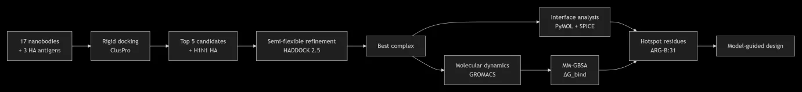
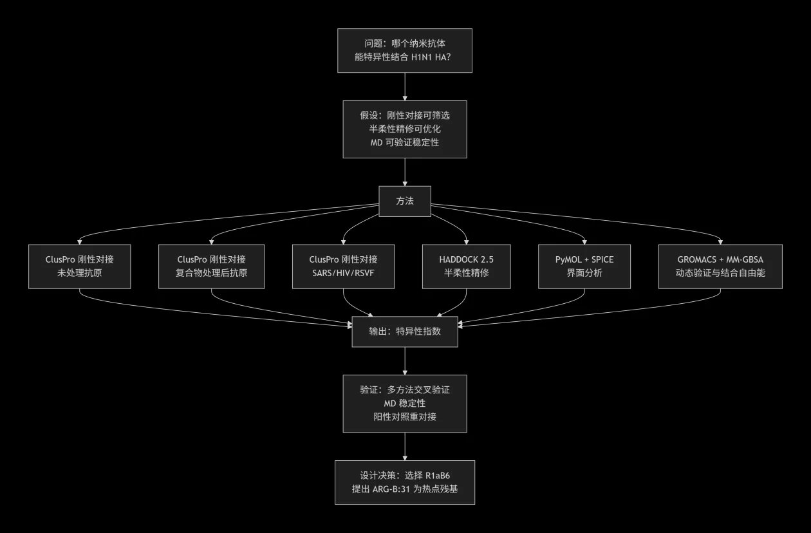

Best Model Award
手上有 17 条纳米抗体序列，一条都没有实验结构。先用分子对接把它们排成序，再决定哪几个值得做实验。
ClusPro 刚性对接把 17 个候选对 3 种甲流 HA 抗原（H1N1、H3N2、H5N1）的打分排成序，用特异性指数量化谁更偏向 H1N1；HADDOCK 2.5 半柔性精修给出 HADDOCK score、聚类大小与界面面积，PyMOL 与 SPICE 给出界面残基和相互作用类型；GROMACS 分子动力学与 MM-GBSA 检查复合物在水中是否稳定、结合自由能是多少；候选对无关病毒抗原（SARS、HIV1、RSVF）的对接结果，用来给交叉反应排一个相对高低。最后收敛到 1 个先导候选 R1aB6，并把 ARGB:31 提为后续突变研究的靶点。
这些数值来自分子对接与模拟，属于计算预测；建模文档第 9 节写明「无实验验证」。检测灵敏度、特异性、检出限、定量范围与临床可用性均未测量。三维视图显示的是抗原来源结构，不是本项目的对接复合物。
Overview
EchoYeast 需要一种能识别 H1N1 HA、同时对其它亚型和无关病毒交叉反应尽量低的纳米抗体，而 17 条候选序列都没有实验结构。逐个做克隆、表达、测结合，代价和周期都高。分子对接先给出排序和结合模式，后续实验就能集中到少数几个候选上。
核心问题是哪个纳米抗体能以最高的亲和力与特异性结合 H1N1 HA。流程要产出四样东西：候选排序、特异性量化、原子水平的结合模式，以及复合物在生理条件下的稳定性判断。

流程按「问题 → 假设 → 方法 → 输出 → 验证 → 设计决策」推进，每一步的输出是下一步的输入。

七个阶段的问题、方法与输出：
| 阶段 | 要回答的问题 | 方法 | 输出 |
|---|---|---|---|
| 1 | 哪个抗体结合 H1N1 最好？ | ClusPro 刚性对接（未处理抗原） | 特异性指数排名 |
| 2 | 处理后抗原是否影响结合？ | ClusPro 刚性对接（复合物处理后抗原） | 交叉验证结合模式 |
| 3 | 是否与无关病毒交叉反应？ | ClusPro 刚性对接（SARS / HIV1 / RSVF） | 交叉反应风险 |
| 4 | 结合模式是否稳定？ | HADDOCK 2.5 半柔性精修 | HADDOCK score、BSA |
| 5 | 哪些残基驱动结合？ | PyMOL + SPICE | 界面残基、相互作用类型 |
| 6 | 复合物在水中是否稳定？ | GROMACS MD + MM-GBSA | RMSD、RMSF、Rg、ΔG_bind |
| 7 | 实验上要验证什么？ | 综合分析 | 热点残基（ARGB:31） |
先导候选 R1aB6 是否能在酵母表面识别 HA、报告通路是否被激活，要靠后续的 PAGER 受体表达与诱导实验回答，读出方式是流式细胞术测 yEGFP 荧光和 X-Gal 显色。这些实验尚未进行。
交互演示：纳米抗体 × 甲流 HA 对接卡牌
把卡牌拖到中间，或直接点击卡牌选择。选完一个抗体加一种抗原，结果区给出该组合的对接结果，排名区给出 5 个候选按特异性指数的排序。演示只覆盖文档里有数值的 5 个候选。
纳米抗体（5 个候选）
三维结构
点击「载入三维结构」后显示抗原结构与文档列出的界面活性残基。
甲流 HA 抗原（3 种）
数据来自建模文档第 5.3、5.4 节，属于计算预测。卡牌上的「目标亚型 / 对照亚型」按文档口径：特异性指数由 H1N1 与 H3N2、H5N1 的打分差值构成，对照亚型用来量化特异性，不是检测对象。
模型假设
生物学假设
抗原一侧，我们用 RCSB 沉积的 HA 结构代表天然构象，并且用了两种状态做对照：直接下载的「未处理抗原」，以及从抗体-抗原复合物中提取、代表结合态构象的「复合物处理后抗原」。识别元件一侧没有这样的便利，17 条候选纳米抗体在 PDB 中都没有实验结构，长度约 114–123 个残基，未加 His-tag 或 linker，所以只能用结构预测模型代替晶体结构。
结合界面按区域处理：HA 上的活性残基（HA1 25、45–49、305–307、332；HA2 361–364、381、382、384、385、388、391、392、395、396、399）与纳米抗体的 CDR 残基视为参与结合的范围。交叉反应则用候选对无关病毒抗原（SARS、HIV1、RSVF）的对接打分平均值来排相对高低，它不构成定量指标。
计算与数学假设
| 假设 | 合理性 | 潜在偏差 |
|---|---|---|
| ClusPro 中受体按刚性处理 | 可以快速筛掉大量候选 | 可能遗漏诱导契合效应 |
| HADDOCK 中界面按半柔性处理 | 允许侧链重排 | 主链保持固定 |
| 对接中使用隐式溶剂 | 蛋白-蛋白对接的常规做法 | 忽略显式水桥 |
| 使用 Amber99sbildn 力场 | 蛋白体系的验证较为充分 | 力场自身的近似 |
| 10 ns 的分子动力学足以检查稳定性 | 常规的初步验证时长 | 可能遗漏慢构象变化 |
因此结论只适用于候选之间的相对比较：给出的是排序与界面描述，不涉及绝对结合亲和力与检测性能。
数据与参数
靶蛋白与抗原处理
三种甲流 HA 抗原均取自 RCSB 已沉积的结构；文档记载的处理为：去除抗体链、去除糖基化与水分子、把 HA1 与 HA2 拆成独立链、统一链 ID（HA 为 A/B，纳米抗体为 C）。
| 抗原 | 毒株 | PDB ID | 来源 | 分辨率 | 保留链 |
|---|---|---|---|---|---|
| H1N1 HA | A/Puerto Rico/8/1934 | 9VH4 | RCSB | 2.80 Å | A = HA1, B = HA2 |
| H3N2 HA | A/Puerto Rico/8/1934-New York/55/2004 | 9VH5 | RCSB | 2.70 Å | A = HA1, B = HA2 |
| H5N1 HA | A/Jiangsu/NJ210/2023 | 9MQ2 | RCSB | 3.06 Å | A = HA1（该条目未沉积 HA2） |
三维视图用的是这三个结构，已按文档口径裁剪成「仅 HA 链」：去掉抗体链、糖基化与杂原子，坐标未改动。各条目另需说明如下。
- 9VH4（H1N1 HA）：该条目是 HA 与一个单域抗体的共结晶复合物；文件已按建模文档 §5.1 的口径裁剪为「仅 HA 链」。共结晶的结合体不是本项目筛出的 R1aB6。
- 9VH5（H3N2 HA）：同 9VH4，已裁剪为仅 HA 链；共结晶结合体不是本项目的 R1aB6。
- 9MQ2（H5N1 HA）：该条目只沉积了 HA1 链（残基 13–321），因此文档列出的 332 与全部 HA2 活性残基在该结构里不存在，页面标注 H5 时相应收敛。
纳米抗体与结构预测
候选为 17 条全新的纳米抗体序列，PDB 中没有实验结构，长度约 114–123 个残基，未加 His-tag 或 linker；结构预测使用本地部署的 AlphaFold2，取 pLDDT 高于 90 的高置信度模型，配体链 ID 记为 C。
打分与精修只对其中 5 个候选给出了可引用的数值（R1aB6、R2aF9、R1aA5、R2bE8、R2bD9），下面的结果小节与交互演示都限定在这 5 个之内。其余 17 个未进入精修阶段，没有可引用的数值。
打分函数与特异性指数
- ClusPro 打分：E = 0.40Erep − 0.40Eatt + 600Eelec + 1.00EDARS；每个「候选 × 抗原」组合保留 Top 10 构象。
- 特异性指数：( E_H1N1 − E_H3N2 + E_H1N1 − E_H5N1 ) / 2。越负表示对 H1N1 的特异性越好。
- HADDOCK 2.5：刚性对接 it0 → 半柔性精修 it1 → 水精修 itw，输出 HADDOCK score / 聚类大小 / BSA (Ų)。HADDOCK score 越负表示界面质量越好。
- 动力学与自由能：GROMACS 分子动力学 + MM-GBSA；力场 Amber99sbildn，水模型 TIP3P，随机种子 gen_seed = 1。
- 阳性对照：以实验解析的 9VH4 复合物做重对接，作为对接流程的对照。
模型结果
筛选与排名
未处理抗原下，17 个候选对三种甲流 HA 抗原的对接打分与平均特异性优势如下（红旗标记处为特异性最优的候选）。特异性指数越负，表示该候选相对其它亚型越偏向 H1N1。

5 个进入精修的候选在未处理抗原下的打分与特异性指数：
| 纳米抗体 | H1N1 | H3N2 | H5N1 | 特异性指数 | 结论 |
|---|---|---|---|---|---|
| R1aB6 | −933.9 | −863.4 | −817.9 | −93.25 | 入选 |
| R2bD9 | −997.0 | −845.0 | −1003.9 | −72.55 | 淘汰 |
| R2bE8 | −921.7 | −915.6 | −813.1 | −57.35 | 淘汰 |
| R1aA5 | −1022.7 | −950.5 | −1013.4 | −40.75 | 入选 |
| R2aF9 | −792.4 | −764.4 | −867.9 | 23.75 | 入选 |
排序为 R1aB6 > R2bD9 > R2bE8 > R1aA5 > R2aF9（按特异性指数由负到正）。
同样的 5 个候选对「复合物处理后抗原」的结果：
| 纳米抗体 | H1N1 | H3N2 | H5N1 | 特异性指数 |
|---|---|---|---|---|
| R2bE8 | −928.1 | −897.2 | −951.3 | −3.85 |
| R2aF9 | −830.6 | −785.3 | −875.6 | −0.15 |
| R2bD9 | −842.5 | −796.0 | −930.3 | 20.60 |
| R1aB6 | −867.2 | −912.0 | −922.2 | 49.90 |
| R1aA5 | −874.6 | −953.1 | −1050.4 | 127.10 |
改用处理后抗原后，所有候选的特异性指数都变为正值或接近零，说明抗原构象的处理会明显改变特异性排序。文档据此以未处理抗原的结果为主要依据，理由是未处理抗原更接近天然构象。
交叉反应风险用候选对无关病毒抗原（SARS、HIV1、RSVF）的平均结合能表示，数值越负代表结合越强、交叉反应风险越高：
| 纳米抗体 | SARS | HIV1 | RSVF | 平均结合能 | 交叉反应风险 |
|---|---|---|---|---|---|
| R1aA5 | −905.4 | −939.8 | −948.5 | −931.2 | 最高 |
| R2bE8 | −840.5 | −936.6 | −894.7 | −890.6 | 较高 |
| R2bD9 | −824.1 | −937.6 | −876.9 | −879.5 | 中等 |
| R1aB6 | −754.3 | −960.8 | −883.6 | −866.2 | 中等 |
| R2aF9 | −742.0 | −814.0 | −713.6 | −756.5 | 最低 |
HADDOCK 半柔性精修
对进入精修的 5 个候选与 H1N1 HA 做半柔性精修后的结果：
| 纳米抗体 | HADDOCK score | 聚类大小 | BSA (Ų) |
|---|---|---|---|
| R1aB6 | −93.2 | 16 | 1890.1 |
| R2aF9 | −89.4 | 61 | 2764.4 |
| R1aA5 | −84.6 | 26 | 2634.4 |
| R2bE8 | −71.1 | 16 | 2538.9 |
| R2bD9 | −68.8 | 5 | 2548.0 |
排序为 R1aB6 > R2aF9 > R1aA5 > R2bE8 > R2bD9。把两个指标画在一起可以看出它们并不总是同向：


结合界面与热点残基
界面分析针对最优组合 R1aB6 与 H1N1 HA。PyMOL 给出的界面残基为：HA 侧 30 个残基（27–32、44–53、303–332、358–396），纳米抗体侧 24 个残基（CDR1 27–37、CDR2 44–65、CDR3 101–104）。SPICE 给出的相互作用类型计数如下：
| 相互作用类型 | 数量 |
|---|---|
| 总接触点 | 61 |
| 氢键 | 19 |
| 盐桥 | 3 |
| 疏水作用 | 39 |
其中距离最近、重复出现的那几个残基被提为热点：
| 纳米抗体残基 | HA 残基 | 相互作用 | 距离 (Å) |
|---|---|---|---|
| ARGB:31 | ASNA:27 | 氢键 | 2.086 |
| ARGB:31 | SERA:29 | 氢键 | 2.180 |
| ARGB:31 | THRA:44 | 氢键 | 3.097 |
| ARGB:31 | GLNA:51 | 氢键 | 2.086 |
| ASPB:55 | THRA:30 | 氢键 | 2.725 |
| THRB:54 | ASPA:31 | 盐桥 | 3.480 |
ARGB:31 参与 4 组氢键，是文档提出的热点残基，并被写为后续 R31A 突变体的研究靶点。
动力学与结合自由能
把 R1aB6 与 H1N1 HA 的复合物放进水盒子做分子动力学（10 ns（文档正文口径，见注意事项），GROMACS，Amber99sbildn 力场，TIP3P 水模型），观察它是否稳定：
| 指标 | 结果 |
|---|---|
| RMSD | 0.45 nm（文档记为稳定） |
| RMSF（界面） | < 0.17 nm |
| Rg | 3.87 nm（稳定） |
| 氢键 | 462.1 ± 9.6 |

结合自由能用 MM-GBSA 估算（gmx_MMPBSA 1.5.0.3，单位 kcal/mol）：
| 能量项 | 数值 (kcal/mol) |
|---|---|
| ΔVDWAALS | −59.41 |
| ΔEEL | 5.22 |
| ΔEGB | 57.69 |
| ΔESURF | −7.23 |
| ΔTOTAL | −3.74 |
文档 §9 自述：MM-GBSA 仅基于 10 帧，统计误差较大。
结论与设计决策
入选候选（3 个）。
- R1aB6：H1N1 特异性最优（未处理抗原指数 −93.25），最低 HADDOCK score（−93.2），MD 稳定，交叉反应风险中等，MM-GBSA 结合自由能 −3.74 kcal/mol。文档据此将其选为识别元件。
- R2aF9：HADDOCK score 第二（−89.4），但 ClusPro 特异性指数为正（+23.75），交叉反应风险最低却对 H1N1 特异性差。
- R1aA5：HADDOCK score 第三（−84.6），但 ClusPro 特异性指数较弱（−40.75），交叉反应风险最高。
淘汰候选（2 个）。
- R2bE8：ClusPro 特异性指数中等（−57.35），HADDOCK score 第四（−71.1），交叉反应风险较高。
- R2bD9：ClusPro 特异性指数第二（−72.55），但 HADDOCK score 最低（−68.8），界面结合质量差。
这些结果对应到具体的设计动作：
| 模型预测 | 设计决策 |
|---|---|
| R1aB6 具有最高 H1N1 特异性 | 选为识别元件 |
| ARGB:31 是热点残基 | 提出 R31A 突变体为后续研究靶点 |
| R2bD9 与 R2bE8 交叉反应风险较高 | 降低优先级 |
接着要做的是实验验证与模型修正。计算预测和候选选择这两步已经走完，剩下的两步取决于后续的湿实验。
验证与讨论
ClusPro 的未处理抗原排序与 HADDOCK 精修都把 R1aB6 列为最优，PyMOL 与 SPICE 各自给出同一批界面残基，分子动力学检查复合物在水中的稳定性，MM-GBSA 给出结合自由能，交叉反应评估给出脱靶风险的相对位置。文档还用实验解析的 9VH4 复合物做了重对接，作为整套流程的对照。
- ClusPro（未处理抗原）与 HADDOCK 都把 R1aB6 列为最优候选。
- PyMOL 与 SPICE 互相印证了同一批界面残基。
- 分子动力学显示复合物在模拟时间内保持稳定；MM-GBSA 得到的结合自由能为 −3.74 kcal/mol，方向与稳定结合一致。
- 交叉反应评估把 R1aB6 放在中等风险水平，未落在最高一档。
两处不一致：
- R2aF9 的 HADDOCK score 排第二，ClusPro 特异性指数却是正的。只看其中一个指标，结论会反过来。
- R1aA5 的界面面积（BSA）比 R1aB6 更大，HADDOCK score 反而更低。界面质量比面积大小更说明问题。
这轮模型做成了四件事：把 17 个候选收窄到 1 个先导分子，给出了原子水平的结合模式，提出了可检验的热点残基，并通过交叉反应评估降低了脱靶风险。
局限性。
- ClusPro 中受体按刚性处理，可能遗漏诱导契合效应。
- 对接使用隐式溶剂，忽略显式水桥。
- HADDOCK 中界面半柔性，允许侧链重排但主链固定。
- 10 ns 的 MD 可能无法捕捉慢构象变化。
- MM-GBSA 仅基于 10 帧，统计误差较大。
- 全文无实验验证（文档 §9 自述）。
可重复性。参数记录如下：
| 项目 | 内容 |
|---|---|
| 软件版本 | ClusPro、HADDOCK 2.5、GROMACS 2026.3、PyMOL、SPICE、gmx_MMPBSA 1.5.0.3 |
| 力场 | Amber99sbildn |
| 水模型 | TIP3P |
| 随机种子 | gen_seed = 1 |
| 参数文件 | 文档记「已上传 GitHub（mdp_files/）」，仓库链接在文档中仍为待补 |
代码与数据可用性。软件版本、力场、水模型与随机种子已列在上一节；分子动力学的参数文件（mdp_files）按文档记载已上传到代码仓库，仓库地址与输入/输出结构文件的公开链接尚未提供。